case study · design
A full visual identity for a Design + Multimedia lecture series at the University of Coimbra — built from a custom typeface up through print, digital, and motion.
concept
The identity is built around a single moving element — a small dot that travels from point to point, generatively landing across the letters that spell "CONVERSAS". It traces a thread, the same kind formed by the ideas and perspectives exchanged in an actual conversation. The system makes that thread visible: nothing said is ever lost after the exchange.
process
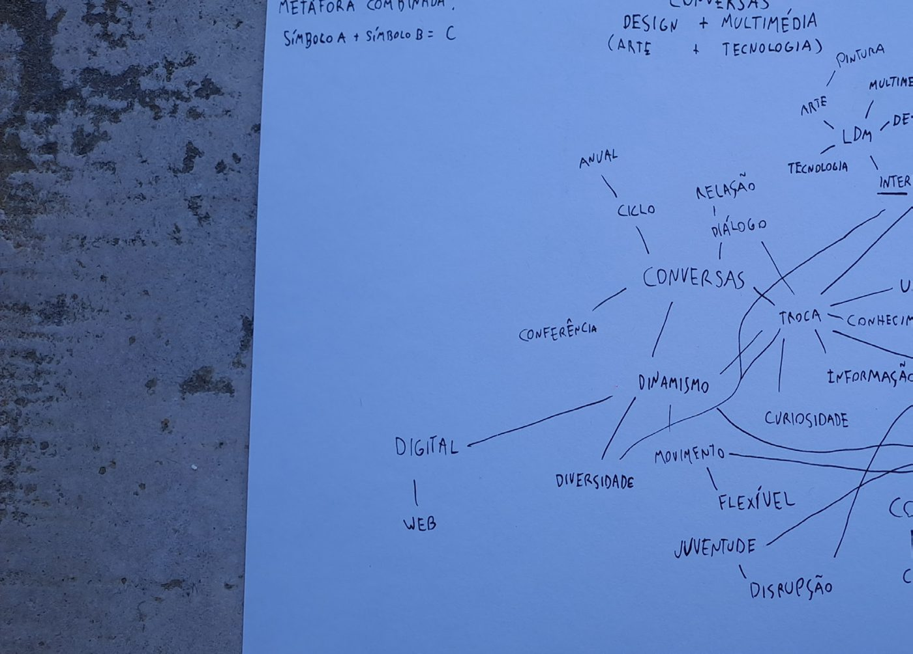
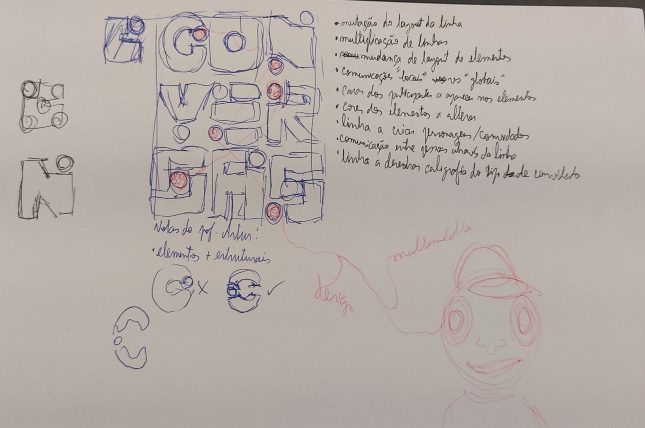
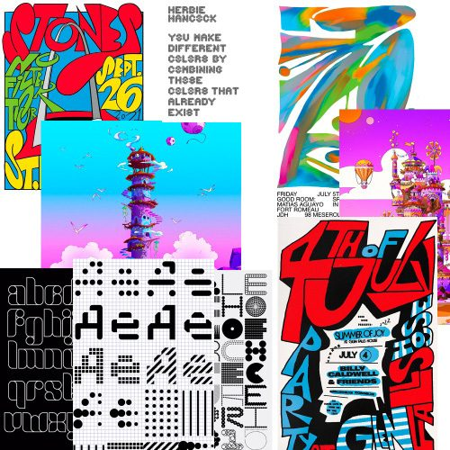
system
Every letterform was built on a strict modular grid, then paired with Oak Sans for headings and body text — so the display face stays loud while everything else stays legible.
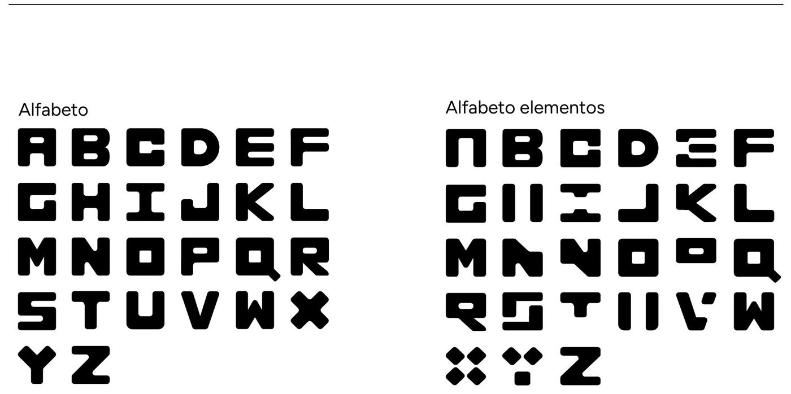
A primary mark, a simplified version for small spaces, an element-only mark for busy layouts, and a sub-brand mark (CCDM) for the organizing student group.
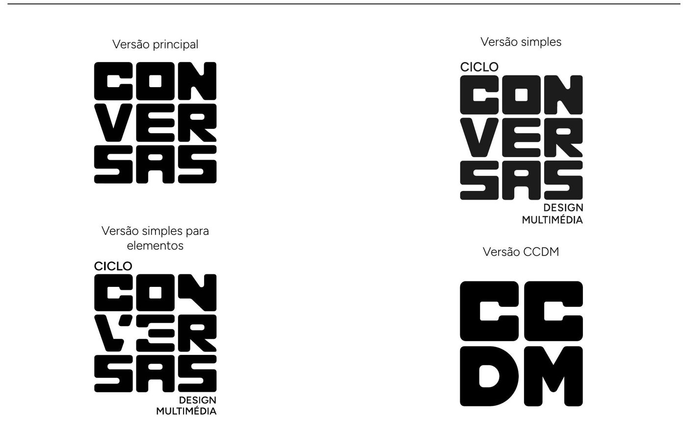
A strict black-and-white base keeps the system disciplined in print — while a saturated, near-primary palette marks each guest speaker, giving every session its own identity within the series.
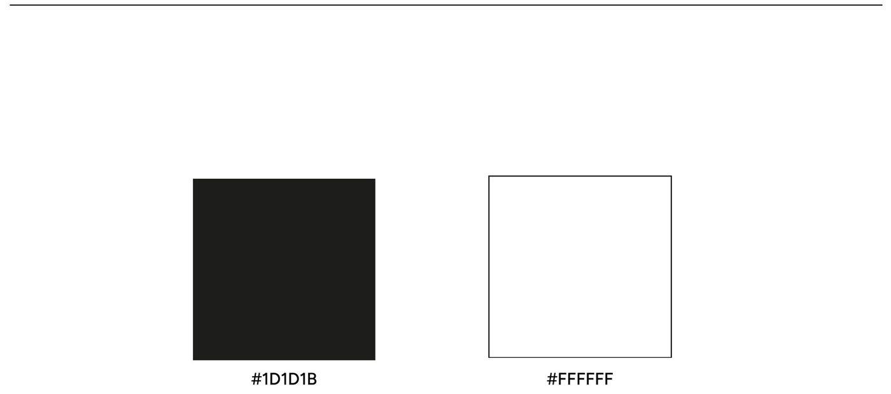
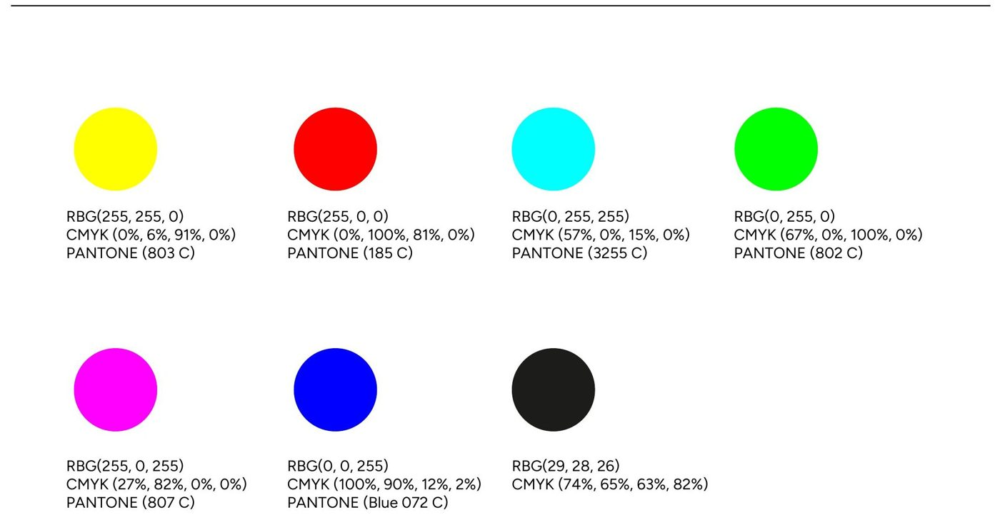
motion
The connecting thread from the logo becomes a generative animation — the same dot-to-dot movement, now literally drawing the identity for social and event use.
applications
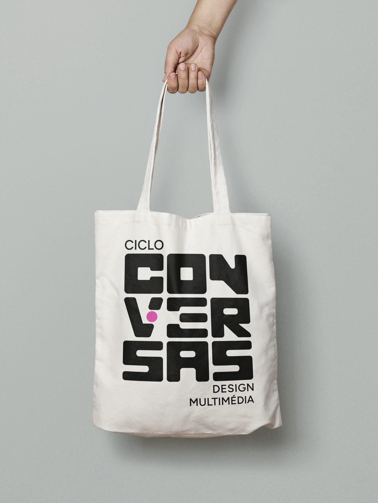
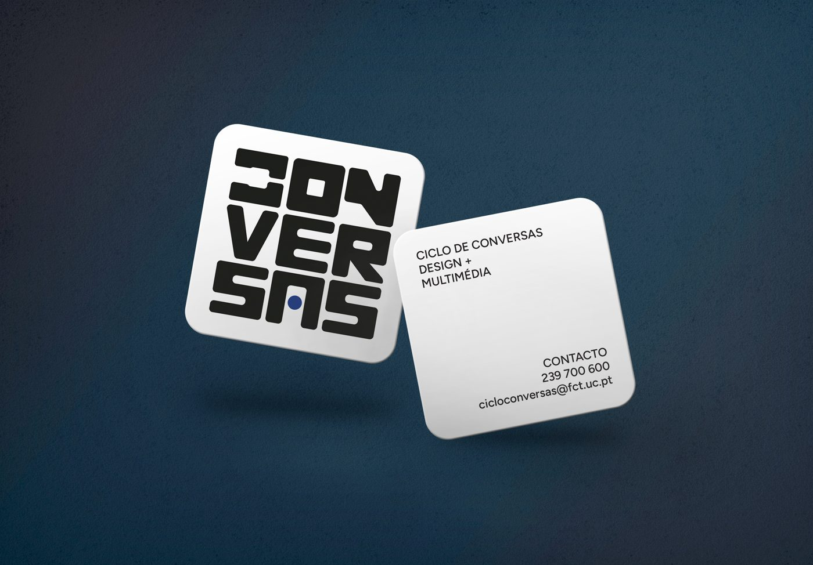
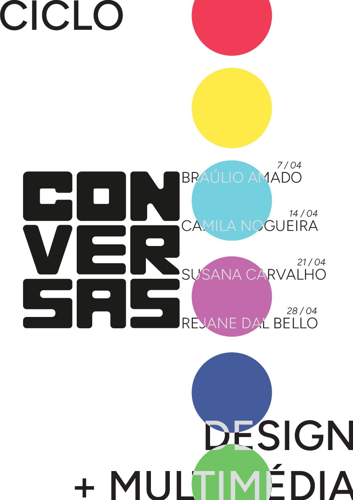
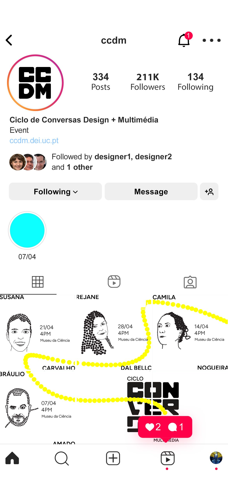
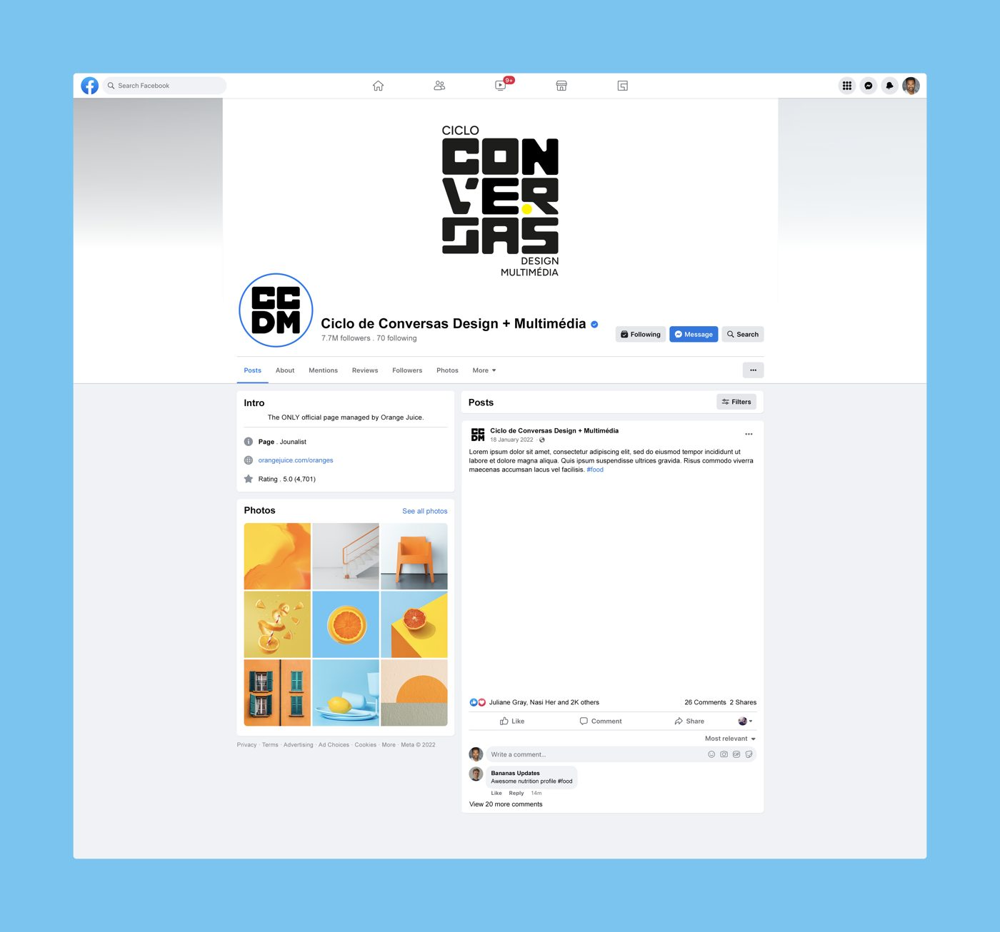